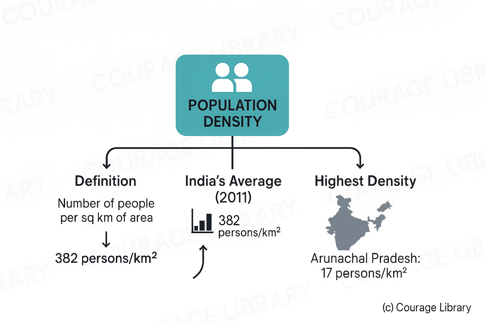
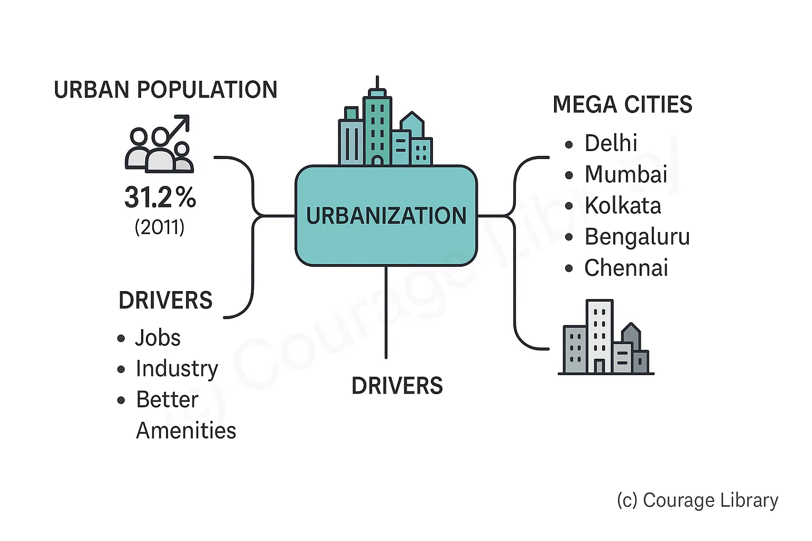

SSC CGL - Detailed Guide 2025
Self-Paced Course
Population and Census Data
Reference: Lucent GK, NCERT Class 6–12
Population Growth, Density & Distribution
Population Growth
- India’s population (Census 2011): 1.21 billion
- Current estimate (2024): ~1.43 billion (UN data; likely surpassed
China)
Growth Phases:
Phase
Period
Characteristics
Stagnant
Stage
Pre-1921
High death
& birth rate → slow growth
Steady
Growth
1921–1951
Population
started growing
Rapid
Growth
1951–1981
Medical
advances → fall in death rate
Slowing
Down
Post-1981
Fertility
decline → slower growth
- India’s population (Census 2011): 1.21 billion
- Current estimate (2024): ~1.43 billion (UN data; likely surpassed China)
Growth Phases:
| Phase | Period | Characteristics |
|---|---|---|
| Stagnant Stage | Pre-1921 | High death & birth rate → slow growth |
| Steady Growth | 1921–1951 | Population started growing |
| Rapid Growth | 1951–1981 | Medical advances → fall in death rate |
| Slowing Down | Post-1981 | Fertility decline → slower growth |
“Year of Great Divide”: 1921 → First time population growth became positive.
Population Density
- Definition: Number of people per sq km of area
- India’s average (2011): 382 persons/km²
- Highest: Bihar (1106 persons/km²)
- Lowest: Arunachal Pradesh (17 persons/km²)

Distribution
| Zone | Population Characteristics |
|---|---|
| Indo-Gangetic Plains | Extremely dense (fertile land, rivers, agriculture) |
| Peninsular Plateau | Moderate (mixed terrain, cities like Bengaluru, Hyderabad) |
| Himalayan States | Sparse (rugged terrain, low temperatures) |
| Desert/Rainforests | Very sparse (Thar Desert, Northeast forests) |
Demographic Transition
A theory describing population changes in stages as a country develops:
| Stage | Birth Rate | Death Rate | Population Growth | India’s Phase |
|---|---|---|---|---|
| Stage 1 | High | High | Stable/slow | Pre-1921 |
| Stage 2 | High | Declining | Rapid | 1921–1981 |
| Stage 3 | Declining | Low | Slowing | Post-1981 |
| Stage 4 | Low | Low | Stable/Negative | Expected future |
India is currently in late Stage 3 of demographic transition.
Urbanization & Migration
Urbanization
- Urban population in 2011: 31.2%
- Driven by: jobs, industry, better amenities
- Mega Cities: Delhi, Mumbai, Kolkata, Bengaluru, Chennai

| Urban Category | Population Size |
|---|---|
| Class I city | 1,00,000+ |
| Million-plus city | 10 lakh+ (53 in 2011) |
| Mega City | 1 crore+ (Mumbai, Delhi, Kolkata) |
Migration
| Type | Description | Major Causes |
|---|---|---|
| Internal Migration | Rural to Urban | Jobs, education, marriage, disasters |
| International Migration | Indians to Gulf, US, UK | Employment, education |
| Seasonal Migration | Temporary agricultural, labour shift | Tribal, poor populations |
Major Corridors: UP & Bihar → Maharashtra, Delhi, Punjab
Census Highlights (Most Recent: Census 2011)
Conducted every 10 years by Office of Registrar General & Census Commissioner, MHA
| Indicator | Value |
|---|---|
| Total Population | 1.21 billion |
| Male Population | 623 million |
| Female Population | 586 million |
| Sex Ratio | 943 females / 1000 males |
| Child Sex Ratio | 919 (0–6 yrs) |
| Literacy Rate | 74.04% |
| Male Literacy | 82.14% |
| Female Literacy | 65.46% |
| Decadal Growth Rate | 17.64% (2001–11) |
| State with Highest Pop. | Uttar Pradesh |
| State with Lowest Pop. | Sikkim |
Upcoming Census (2021): Delayed due to COVID-19; yet to be completed as of 2024
Developed By Jan Mohammad
Next
Start Your SSC CGL Journey Now!
Join Courage Library to experience disciplined study and expert support.
Be a Couragian!